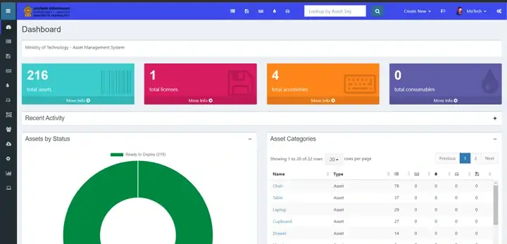

Snipe-IT Deployment on Linux (Ubuntu) via Docker, Apache & Nginx
Snipe-IT is web-based open-source software for asset management.
Table of contents
What is Snipe-IT?
Snipe-IT was made for asset management, to enable departments to track who has which asset, when it was purchased, which software licenses and accessories are available, and so on.
Snipe-IT is a Free Open Source (FOSS) web based project built on Laravel and it follows a standard Laravel MVC file structure.
This project is actively developed and they release quite frequently. Check out the Snipe-IT website for a demo, a comprehensive list of features, screenshots and announcements for updates on new versions.
Website Documentation Demo GitHub

I made a step-by-step guide of Snipe-IT installation, configuration, and its features for the Ministry of Technology Sri Lanka’s official website. I will provide links to each section of that documentation as follows:
Introduction
Overview, introduction, and getting started guide to the Snipe-IT asset management system.
Features
Main features available on the system and a guide on how to use them correctly.
Video Guide
This video guide includes feature reviews, configurations, and how to use the functionalities of the Snipe-IT system; it also includes the mobile application configuration and its features.
Installation
The installation guide covers how to deploy Snipe-IT software on a Linux (Ubuntu) system via Docker, Apache, and Nginx services.
This guide was created in June 2022, and later updates of Snipe-IT may make this guide’s configuration steps slightly different.
Install Snipe-IT via Docker
Install Snipe-IT via Apache
Install Snipe-IT via Nginx
Pre-Flight